def cstan(stan_file, data=None, seed=123, chains=4):
model = CmdStanModel(stan_file=stan_file)
fit = model.sample(
data=data,
seed=seed,
chains=chains,
parallel_chains=chains,
show_progress=False,
)
return fit
def plot_km(data, colors=None, ax=None, **kwargs):
if ax is None:
_, ax = plt.subplots()
if colors is None:
colors = {1: "black", 2: "orange"}
kmf = KaplanMeierFitter()
for c in sorted(set(data["color"])):
mask = data["color"] == c
kmf.fit(
data.loc[mask, "days"].values,
event_observed=data.loc[mask, "adopted"].values,
)
kmf.plot_survival_function(
ax=ax, color=colors.get(c, "gray"),
ci_show=False,
linewidth=2,
label=f"Color {c}", **kwargs
)
ax.set_xlabel("Days")
ax.set_ylabel("Proportion un-adopted")
ax.get_legend().remove()
return ax
# We will use these in multiple places, so define them once
args_dist = {"var_names": ["p"],
"cols": ["__variable__"],
"aes": {"color": ["p_dim_0"]},
"color": ["black", "orange"],
"visuals": {"point_estimate": False,
"point_estimate_text": False,
"credible_interval":False,
"title":{"text":"probability of adoption"}
},
}
args_lines = {"ref_dim": "p_dim_0",
"aes_by_visuals": {"ref_line": ["color"]},
}Incremental development and testing: Black cat adoptions
This notebook includes the code for the Bayesian Workflow book Chapter 22 Incremental development and testing: Black cat adoptions.
1 Introduction
Intro text
Utility functions for sampling using cmdstanpy and plotting
2 Data
Cat adoptions data is available in rethinking package. We read the data from github, so there is no need to install the rethinking package.
urlfile = "https://raw.githubusercontent.com/rmcelreath/rethinking/master/data/AustinCats.csv"
d = pd.read_csv(urlfile, sep=";")
d.info()
d = d.assign(
days=d["days_to_event"],
adopted=(d["out_event"] == "Adoption").astype(int),
color=np.where(d["color"] == "Black", 1, 2),
)<class 'pandas.DataFrame'>
RangeIndex: 22356 entries, 0 to 22355
Data columns (total 9 columns):
# Column Non-Null Count Dtype
--- ------ -------------- -----
0 id 22356 non-null str
1 days_to_event 22356 non-null int64
2 date_out 21807 non-null str
3 out_event 22356 non-null str
4 date_in 22356 non-null str
5 in_event 22356 non-null str
6 breed 22356 non-null str
7 color 22356 non-null str
8 intake_age 22356 non-null int64
dtypes: int64(2), str(7)
memory usage: 3.6 MBPrepare data for Stan models
dat = {
"N": int(len(d)),
"days": d["days"].astype(int).values,
"adopted": d["adopted"].astype(int).values,
"color": d["color"].astype(int).values,
}Plot individual cats as lines
n = 100
idx = rng.choice(dat["N"], size=n, replace=False)
ymax = dat["days"][idx].max()
_, ax = plt.subplots()
ax.set(xlim=(0, ymax),
ylim=(1, n),
xlabel="Days observed",
ylabel="Cat")
for i, j in enumerate(idx):
cat_color = "black" if dat["color"][j] == 1 else "orange"
ax.plot([0, dat["days"][j]], [i, i], lw=4, color=cat_color)
if dat["adopted"][j] == 1:
ax.scatter(dat["days"][j], i, s=30, color=cat_color, zorder=5)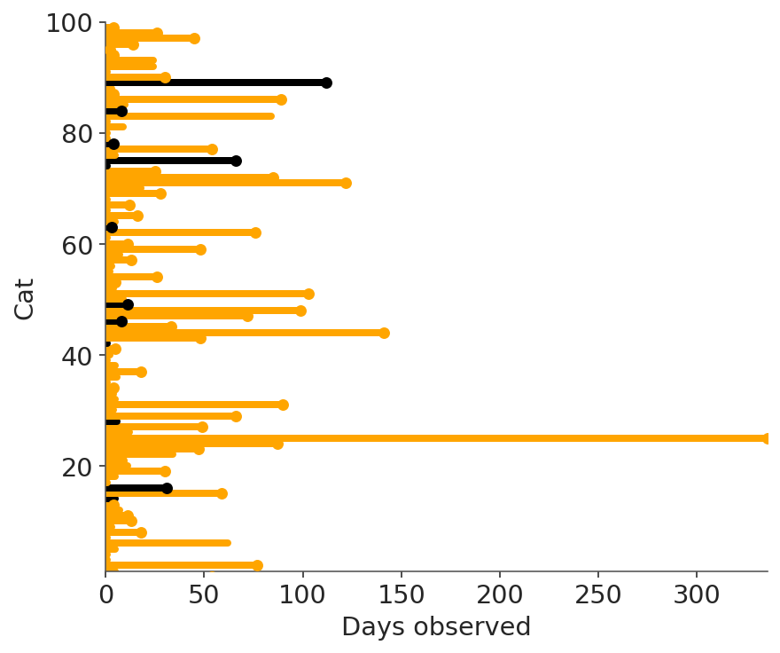
d_sample = d.iloc[idx].copy()
d_sample["cat_idx"] = range(1, len(d_sample) + 1)
_, ax = plt.subplots(figsize=(6, 3.5))
for i in d_sample["cat_idx"]:
row = d_sample[d_sample["cat_idx"] == i].iloc[0]
color_val = "black" if row["color"] == 1 else "orange"
ax.plot([0, row["days"]], [i, i], color=color_val, lw=1)
if row["adopted"] == 1:
ax.scatter(row["days"], i, color=color_val, s=30, zorder=5)
else:
ax.scatter(row["days"], i, facecolors="none", edgecolors=color_val, s=30, zorder=5)
legend_elements = [
Line2D([0], [0], marker="o", color="black", label="Black / Adopted", markersize=6, linestyle="None"),
Line2D([0], [0], marker="o", color="orange", label="Other / Adopted", markersize=6, linestyle="None"),
Line2D([0], [0], marker="o", color="black", label="Black / Other",
markerfacecolor="none", markersize=6, linestyle="None"),
Line2D([0], [0], marker="o", color="orange", label="Other / Other",
markerfacecolor="none", markersize=6, linestyle="None"),
]
ax.legend(handles=legend_elements, loc="upper right")
ax.set(xlabel="Days observed", ylabel="Cat")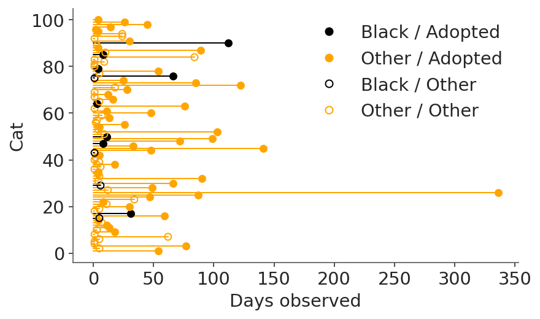
3 Generative models
How should we model these data? Think about how they were generated. We start with process of adoption and then add observation (censoring) process.
def cat_adopt(day, prob):
while day <= 1000:
if rng.uniform() <= prob:
return day
day += 1
return day
def sim_cats1(n=10, p=np.array([0.1, 0.2])):
color = rng.choice([1, 2], size=n)
days = np.array([cat_adopt(1, p[c - 1]) for c in color])
return {"N": int(n), "days": days.tolist(), "color": color.tolist(), "adopted": [1] * n}Simulate using the generative model
synth_cats = sim_cats1(1000)Plot empirical K-M curves
synth_df = pd.DataFrame(synth_cats)
_, ax = plt.subplots()
plot_km(synth_df, ax=ax)
ax.set_xlim(0, 50)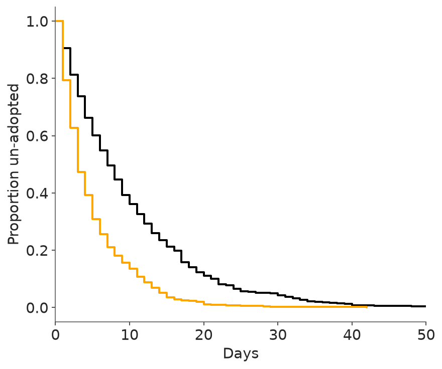
_, ax = plt.subplots(figsize=(6, 3.5))
plot_km(synth_df, ax=ax)
ax.set(xlim=(0, 50),
ylim=(0, 1.02)
)
ax.margins(x=0)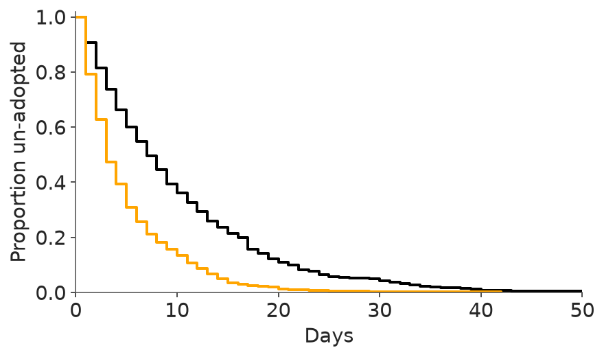
3.1 First Stan model
print_stan("adoptions_observed.stan")// observed adoptions only
data{
int N;
array[N] int adopted; // 1/0 indicator
array[N] int days; // days until event
array[N] int color; // 1=black, 2=other
}
parameters{
vector<lower=0,upper=1>[2] p;
}
model{
p ~ beta(1,10);
for (i in 1:N) {
real P = p[color[i]];
if (adopted[i]==1) {
target += log((1-P)^(days[i]-1) * P);
} else {
// something here
}
}
}Prior predictive simulation
n = 12
sim_prior = rng.beta(1, 10, size=(2, n))_, ax = plt.subplots()
ax.set(xlim=(0, 50),
ylim=(0, 1),
xlabel="Days",
ylabel="Proportion un-adopted",
title="Prior predictive distribution")
for i in range(n):
days_rep = sim_cats1(n=1000, p=sim_prior[:, i])
df_rep = pd.DataFrame(days_rep)
for c, col in [(1, "black"), (2, "orange")]:
mask = df_rep["color"] == c
kmf = KaplanMeierFitter()
kmf.fit(df_rep.loc[mask, "days"], event_observed=df_rep.loc[mask, "adopted"])
ax = kmf.plot_survival_function(ax=ax, color=col, linewidth=2, ci_show=False)
ax.get_legend().remove()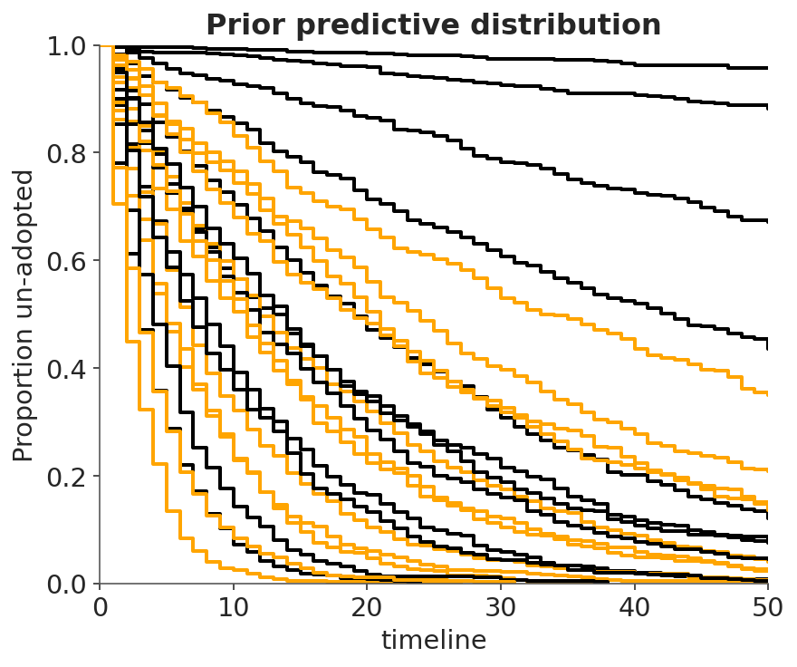
Test the first model code using simulated data
p_sim = [0.1, 0.15]
sim_dat1 = sim_cats1(n=1000, p=np.array(p_sim))fit1s = cstan("adoptions_observed.stan", data=sim_dat1)
idata_1s = az.from_cmdstanpy(fit1s)Posterior summary
az.summary(idata_1s, var_names=["p"])| mean | sd | eti89_lb | eti89_ub | ess_bulk | ess_tail | r_hat | mcse_mean | mcse_sd | |
|---|---|---|---|---|---|---|---|---|---|
| p[0] | 0.1079 | 0.0046 | 0.1 | 0.12 | 3155 | 2485 | 1.00 | 8.2e-05 | 5.8e-05 |
| p[1] | 0.1423 | 0.0058 | 0.13 | 0.15 | 3586 | 2893 | 1.00 | 9.7e-05 | 6.6e-05 |
Posterior with simulated data
pc = az.plot_dist(idata_1s, **args_dist)
az.add_lines(pc, p_sim, **args_lines)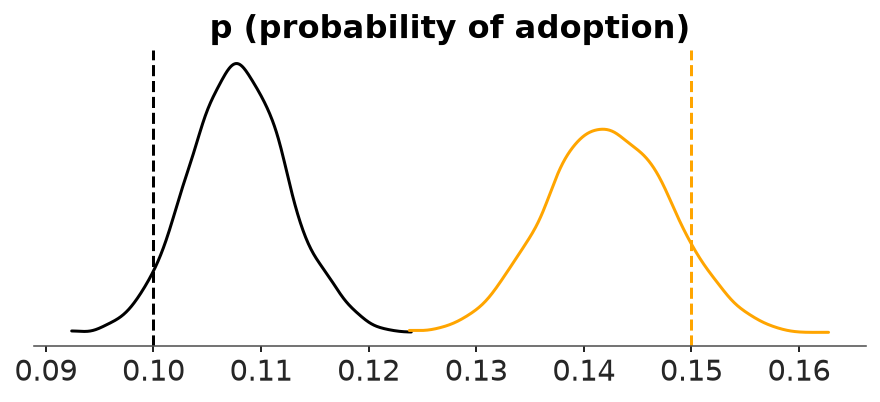
Sample from the posterior using the real data
fit1 = cstan("adoptions_observed.stan", data=dat)
idata_1 = az.from_cmdstanpy(fit1)Posterior summary
az.summary(idata_1, var_names=["p"])| mean | sd | eti89_lb | eti89_ub | ess_bulk | ess_tail | r_hat | mcse_mean | mcse_sd | |
|---|---|---|---|---|---|---|---|---|---|
| p[0] | 0.02285 | 0.00059 | 0.022 | 0.024 | 2848 | 2409 | 1.00 | 1.1e-05 | 7.6e-06 |
| p[1] | 0.026588 | 0.000267 | 0.026 | 0.027 | 3084 | 2550 | 1.00 | 4.8e-06 | 3.4e-06 |
Kaplan-Meier posterior simulations
post1 = fit1.draws_pd()
_, ax = plt.subplots()
ax.set(xlim=(0, 50),
ylim=(0, 1),
xlabel="Days",
ylabel="Proportion un-adopted",
title="Posterior predictive distribution (1000 cats)")
n_km = 12
for i in range(n_km):
p_draws = post1.iloc[i][["p[1]", "p[2]"]].values
days_rep = sim_cats1(n=1000, p=p_draws)
df_rep = pd.DataFrame(days_rep)
for c, col in [(1, "black"), (2, "orange")]:
mask = df_rep["color"] == c
kmf = KaplanMeierFitter()
kmf.fit(df_rep.loc[mask, "days"], event_observed=df_rep.loc[mask, "adopted"])
ax = kmf.plot_survival_function(ax=ax, color=col, alpha=0.5, linewidth=2, ci_show=False)
ax.get_legend().remove()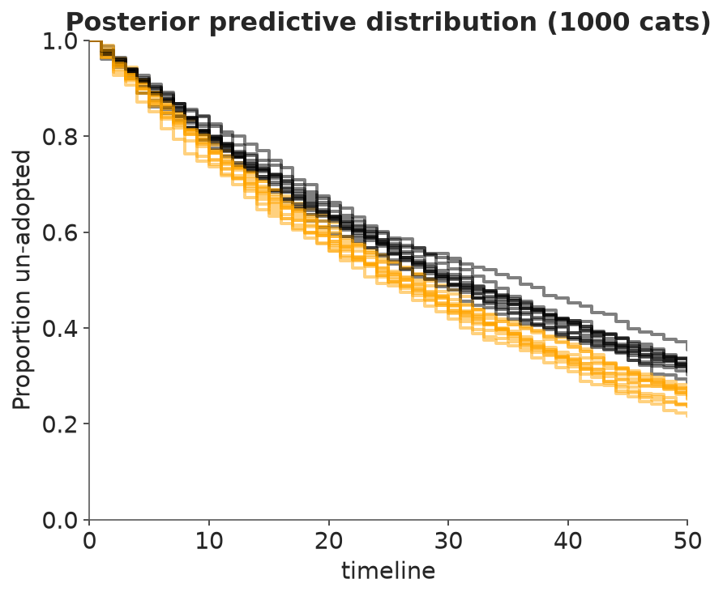
3.2 Add observation (censoring) model
Simulate from the generative model
def sim_cats2(n=10, p=np.array([0.1, 0.2]), cens=50):
color = rng.choice([1, 2], size=n)
days = np.array([cat_adopt(1, p[c - 1]) for c in color])
adopted = (days < cens).astype(int)
days = np.where(adopted == 1, days, cens)
return {"N": int(n), "days": days.tolist(), "color": color.tolist(), "adopted": adopted.tolist()}print_stan("adoptions_censored.stan")// all events, including censored
data{
int N;
array[N] int adopted; // 1/0 indicator
array[N] int days; // days until event
array[N] int color; // 1=black, 2=other
}
parameters{
vector<lower=0,upper=1>[2] p;
}
model{
p ~ beta(1,10);
for (i in 1:N) {
real P = p[color[i]];
if (adopted[i]==1) {
target += log((1-P)^(days[i]-1) * P);
} else {
target += log((1-P)^days[i]);
}
}
}Test censoring model using simulated data
sim_dat2 = sim_cats2(n=1000, p=np.array([0.01, 0.02]))fit2s = cstan("adoptions_censored.stan", data=sim_dat2)
idata_2s = az.from_cmdstanpy(fit2s)Posterior summary
az.summary(idata_2s, var_names=["p"])| mean | sd | eti89_lb | eti89_ub | ess_bulk | ess_tail | r_hat | mcse_mean | mcse_sd | |
|---|---|---|---|---|---|---|---|---|---|
| p[0] | 0.00917 | 0.00067 | 0.0081 | 0.01 | 3915 | 2780 | 1.00 | 1.1e-05 | 7.6e-06 |
| p[1] | 0.02102 | 0.00118 | 0.019 | 0.023 | 3880 | 2985 | 1.00 | 1.9e-05 | 1.4e-05 |
Posterior with simulated data
pc = az.plot_dist(idata_2s, **args_dist)
az.add_lines(pc, (0.01, 0.02), **args_lines)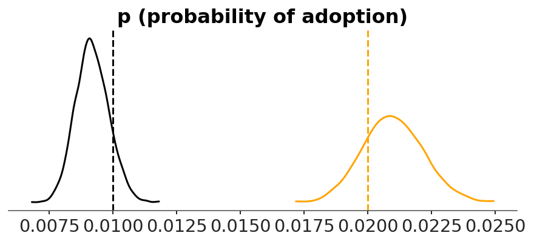
Test previous model with new censored data
fit1s_cens = cstan("adoptions_observed.stan", data=sim_dat2)
idata_1s_cens = az.from_cmdstanpy(fit1s_cens)az.summary(idata_1s_cens, var_names=["p"])| mean | sd | eti89_lb | eti89_ub | ess_bulk | ess_tail | r_hat | mcse_mean | mcse_sd | |
|---|---|---|---|---|---|---|---|---|---|
| p[0] | 0.0461 | 0.00336 | 0.041 | 0.052 | 3880 | 2674 | 1.00 | 5.4e-05 | 3.7e-05 |
| p[1] | 0.05073 | 0.00279 | 0.046 | 0.055 | 3440 | 2694 | 1.00 | 4.7e-05 | 3.3e-05 |
pc = az.plot_dist(idata_1s_cens, **args_dist)
az.add_lines(pc, (0.01, 0.02), **args_lines)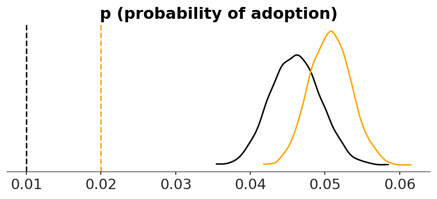
Sample using real data
fit1_real = cstan("adoptions_observed.stan", data=dat)
fit2_real = cstan("adoptions_censored.stan", data=dat)
idata_1_real = az.from_cmdstanpy(fit1_real)
idata_2_real = az.from_cmdstanpy(fit2_real)Kaplan-meier posterior simulations
post1_real = fit1_real.draws_pd()
post2_real = fit2_real.draws_pd()
_, ax = plt.subplots()
ax.set(xlim=(0, 50),
ylim=(0, 1),
xlabel="Days",
ylabel="Proportion un-adopted",
title="Posterior predictive distribution (1000 cats)")
n_km = 12
for i in range(n_km):
p_draws = post2_real.iloc[i][["p[1]", "p[2]"]].values
days_rep = sim_cats1(n=1000, p=p_draws)
df_rep = pd.DataFrame(days_rep)
for c, col in [(1, "black"), (2, "orange")]:
mask = df_rep["color"] == c
kmf = KaplanMeierFitter()
kmf.fit(df_rep.loc[mask, "days"], event_observed=df_rep.loc[mask, "adopted"])
kmf.plot_survival_function(ax=ax, color=col, alpha=0.5, linewidth=1,
ci_show=False)
n_add = 1
for i in range(n_add):
p_draws = post1_real.iloc[i][["p[1]", "p[2]"]].values
days_rep = sim_cats1(n=10000, p=p_draws)
df_rep = pd.DataFrame(days_rep)
for c, col in [(1, "black"), (2, "orange")]:
mask = df_rep["color"] == c
kmf = KaplanMeierFitter()
kmf.fit(df_rep.loc[mask, "days"], event_observed=df_rep.loc[mask, "adopted"])
ax = kmf.plot_survival_function(ax=ax, color=col, alpha=0.5, linewidth=8,
ci_show=False)
ax.get_legend().remove()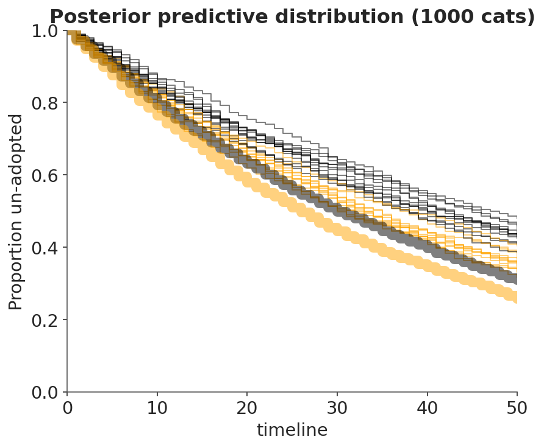
3.3 Model that uses parameters for censored observations
print_stan("adoptions_imputation.stan")// imputation version
data{
int N;
array[N] int adopted; // 1/0 indicator
vector[N] days; // days until event
array[N] int color; // 1=black, 2=other
}
parameters{
vector<lower=0,upper=1>[2] p;
vector<lower=days>[N] days_imputed;
}
model{
p ~ beta(1,10);
for (i in 1:N) {
real P = p[color[i]];
if (adopted[i]==1) {
target += log((1-P)^(days[i]-1) * P);
days_imputed[i] ~ normal(days[i],0.01);
} else {
target += log((1-P)^(days_imputed[i]-1) * P);
}
}
}dat_float = {
"N": int(len(d)),
"days": d["days"].astype(float).values,
"adopted": d["adopted"].astype(int).values,
"color": d["color"].astype(int).values,
}sim_dat_float = {
"N": sim_dat2["N"],
"days": [float(x) for x in sim_dat2["days"]],
"adopted": sim_dat2["adopted"],
"color": sim_dat2["color"],
}
fit3s = cstan("adoptions_imputation.stan", data=sim_dat_float)
idata_3s = az.from_cmdstanpy(fit3s)Posterior summary
az.summary(idata_3s, var_names=["p"])| mean | sd | eti89_lb | eti89_ub | ess_bulk | ess_tail | r_hat | mcse_mean | mcse_sd | |
|---|---|---|---|---|---|---|---|---|---|
| p[0] | 0.00924 | 0.00069 | 0.0082 | 0.01 | 2889 | 3286 | 1.00 | 1.3e-05 | 9.2e-06 |
| p[1] | 0.02113 | 0.00119 | 0.019 | 0.023 | 5032 | 3629 | 1.00 | 1.7e-05 | 1.2e-05 |
3.4 Poisson model
Model that uses Poisson count outcomes instead of duration outcomes to handle censoring. This depends upon constant hazard function though?
print_stan("adoptions_poisson.stan")// poisson version
data{
int N;
array[N] int adopted; // 1/0 indicator
vector[N] days; // days until event
array[N] int color; // 1=black, 2=other
}
parameters{
vector<lower=0>[2] lambda;
}
model{
lambda ~ exponential(10.0);
adopted ~ poisson(lambda[color] .* days);
}fit4s = cstan("adoptions_poisson.stan", data=sim_dat_float)
idata4s = az.from_cmdstanpy(fit4s)Posterior summary
az.summary(idata4s, var_names=["lambda"])| mean | sd | eti89_lb | eti89_ub | ess_bulk | ess_tail | r_hat | mcse_mean | mcse_sd | |
|---|---|---|---|---|---|---|---|---|---|
| lambda[0] | 0.00917 | 0.00068 | 0.0081 | 0.01 | 3327 | 2438 | 1.00 | 1.2e-05 | 8.3e-06 |
| lambda[1] | 0.02105 | 0.00117 | 0.019 | 0.023 | 2930 | 2742 | 1.00 | 2.2e-05 | 1.6e-05 |
3.5 Varying effects model
Simulate background traits that differentiate cats of same color.
def sim_cats3(n=10, p=np.array([0.1, 0.2]), cens=50, xsd=np.array([0.1, 0.2])):
color = rng.choice([1, 2], size=n)
days = np.zeros(n)
for i in range(n):
z = rng.normal(0, xsd[color[i] - 1])
pp = inv_logit(np.log(p[color[i] - 1] / (1 - p[color[i] - 1])) + z)
days[i] = cat_adopt(1, pp)
adopted = (days < cens).astype(int)
days = np.where(adopted == 1, days, cens)
return {"N": int(n), "days": days.astype(int).tolist(), "color": color.tolist(), "adopted": adopted.tolist()}sim_dat3 = sim_cats3(n=1000, p=np.array([0.2, 0.1]), xsd=np.array([0.1, 0.1]))Varying effects model
print_stan("adoptions_varying.stan")// cats vary in their adoption probabilities
data{
int N;
array[N] int adopted; // 1/0 indicator
array[N] int days; // days until event
array[N] int color; // 1=black, 2=other
}
parameters{
// average adoptions
vector<lower=0,upper=1>[2] p;
vector<lower=0>[2] theta; // dispersion
array[N] vector<lower=0,upper=1>[2] q; // cat specific probabilities
}
model{
p ~ beta(1,10);
theta ~ exponential(1);
for (i in 1:N) {
real P = 0;
for (j in 1:2)
q[i,j] ~ beta(p[j]*theta[j], (1-p[j])*theta[j]);
P = q[i,color[i]];
if (adopted[i]==1) {
target += log((1-P)^(days[i]-1) * P);
} else {
target += log((1-P)^days[i]);
}
}
}fit2s_vary = cstan("adoptions_censored.stan", data=sim_dat3)
fit5s = cstan("adoptions_varying.stan", data=sim_dat3)
idata_5s = az.from_cmdstanpy(fit5s)4 Workflow
4.1 Prior predictive distribution
Repeatedly sample from prior, simulate observations
Prior draws
n_prior = 100
p1_prior = rng.beta(1, 10, size=n_prior)
p2_prior = rng.beta(1, 10, size=n_prior)def sim_cats2_geom(n=1000, p=np.array([0.01, 0.02]), cens=50):
color = rng.choice([1, 2], size=n)
days = rng.geometric(p[color - 1], size=n)
adopted = (days < cens).astype(int)
days = np.where(adopted == 1, days, cens)
return {"N": int(n), "days": days.tolist(), "color": color.tolist(), "adopted": adopted.tolist()}
prior_days = np.array([sim_cats2_geom(1, p=np.array([p1_prior[i], p2_prior[i]]))["days"][0]
for i in range(n_prior)])_, ax = plt.subplots()
mask_cens = prior_days == 50
ax.scatter(np.where(~mask_cens)[0], prior_days[~mask_cens], c="C0", marker="s")
ax.scatter(np.where(mask_cens)[0], prior_days[mask_cens], c="C1", marker="o")
ax.set(xlabel="simulated cat", ylabel="days")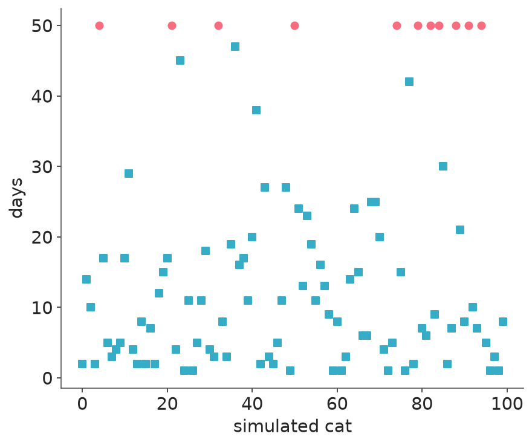
4.2 Posterior predictive distribution
Sample from posterior, simulate observations. Problem with this example: need to impute censored values so we’ll simulate Kaplan-Meier curves to compare to empirical curve.
Plot empirical K-M curves
_, ax = plt.subplots()
kmf = KaplanMeierFitter()
for c, col in [(1, "black"), (2, "orange")]:
mask = d["color"] == c
kmf.fit(d.loc[mask, "days"], event_observed=d.loc[mask, "adopted"])
kmf.plot_survival_function(ax=ax, color=col, linewidth=1,
ci_show=False, label=f"Color {c}")
ax.set(xlim=(0, 90),
xlabel="Days",
ylabel="Proportion un-adopted",
)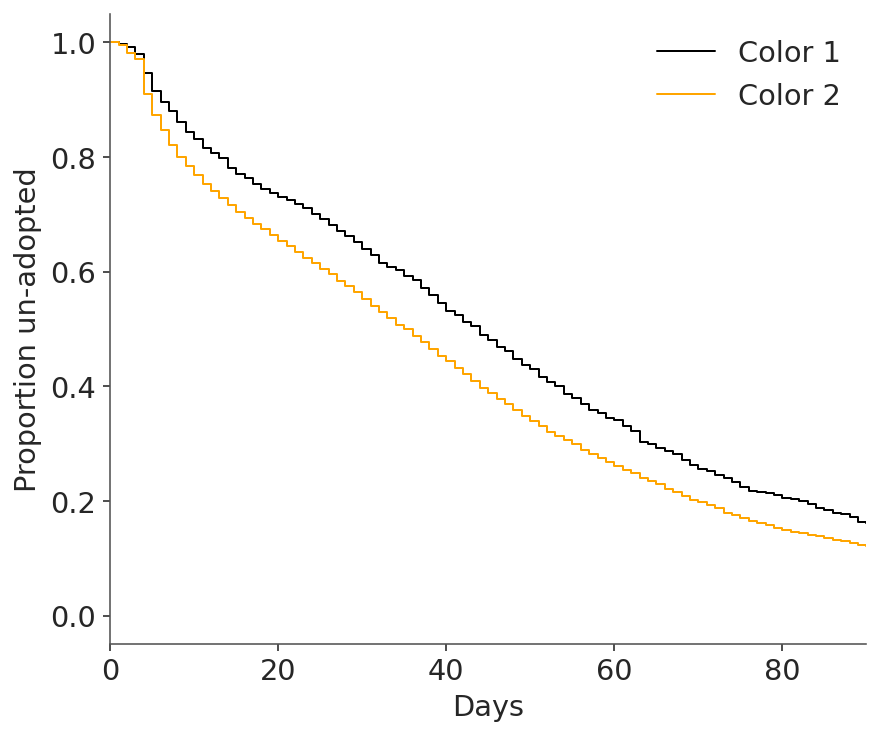
Licenses
- Code © 2025, Richard McElreath, licensed under BSD-3.
- Text © 2025, Richard McElreath, licensed under CC-BY-NC 4.0.